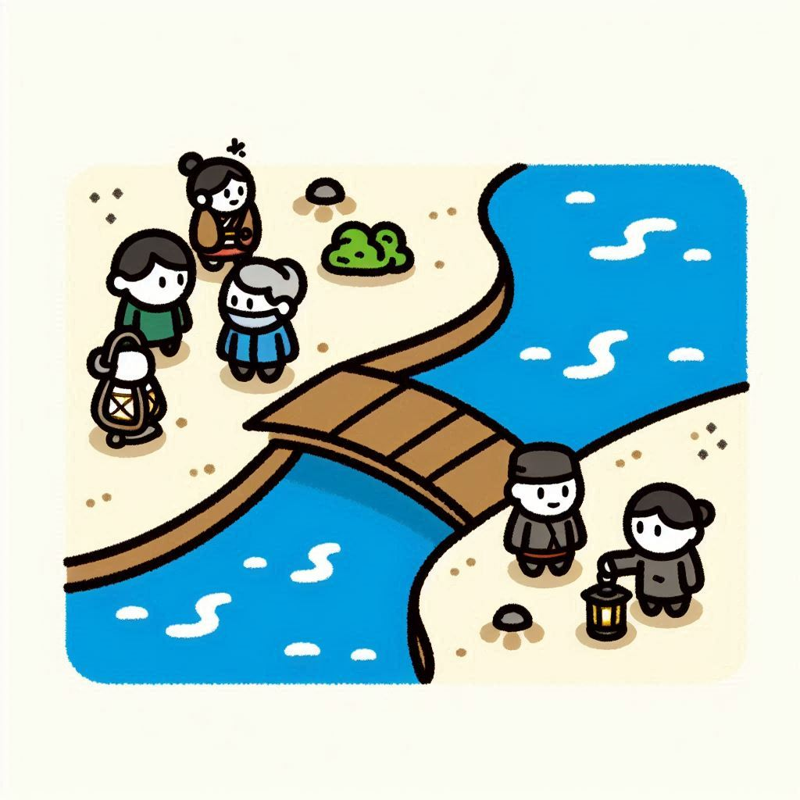

Cuatro hombres llegan a un río por la noche. Hay un puente estrecho, el cual sólo soporta a dos personas a la vez. Los individuos cuentan con una linterna para alumbrarse, imprescindible si se quiere llegar al otro lado, ya que está todo oscuro y sin iluminación es imposible. Por lo tanto, si cruzan dos personas, una debe volver –inevitablemente– para que puedan cruzar los demás. Se sabe que el individuo A puede cruzar el puente en 1 minuto; el B, en 2 minutos. El C y el D, en 5 y 8 respectivamente. Este sólo soporta a dos personas a la vez. Entonces, ¿pueden cruzar todo el puente en quince minutos o menos?
